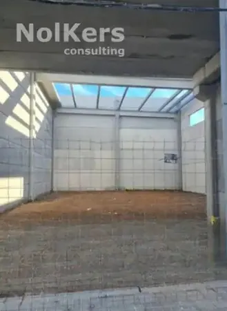
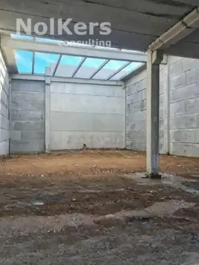

Plano · tocar un número de la lista lo marca acá
Letras: condiciones go/no-go · o: obra necesaria · números: lo que hay que medir o confirmar · c: lo que el chequeo de circulación marca hoy · trazos: el área o la franja de la cota · la línea azul: el largo libre a lo largo de la pista · ejes x/z: el origen de las cotas.
Condiciones go/no-go · si alguna sale mal, la nave se cae o hay que rehacer el layout
- Se decide en la visitaDecide: ≥ 7,8 m libres bajo jácenas, cerchas, luminarias e instalaciones en la vertical de la plataforma: plataforma a 5 m + 2,4 m del rider + 0,4 m de instalaciones (PROGRAMA §1). Si da menos, se baja la plataforma (a lo medido − 2,8 m), nunca el run-out.Altura libre medida con láser sobre la plataforma (m):
5 notas del layout
fuente de la cota: publicada
riesgo: Trampolines fuera de la planta, por la prioridad pista > mini rampa > trampolines. Con colchonetas reales necesitan 8,2 × 10,6 o 6,05 × 14,9 m en doble altura. Meterlos obligaría a acortar la pista ≈4 m (plataforma a 4,5 y llano de 11,5) y a apretar los servicios, o a dejar 2 líneas. En fila entrarían en la banda lateral si el ancho real llega a ≥ 18,3 m.
riesgo: Margen en altura de solo 0,2 m sobre la regla de la plataforma: encima de ella no puede colgar ninguna luminaria, ventilador ni conducto.
supuesto: Pórticos cada 12,4 m (4 vanos) más uno en el borde del altillo (z ≈ 42,8), con pilastras de 0,45 × 0,5 en las dos paredes; el visor pone las jácenas sobre esas pilastras. Además: pilar central del testero, pilastras en el borde del altillo, un pilar de fachada junto al portón A y el pilar exento del altillo, de suelo a cubierta, con ménsula para la viga del forjado (fotos 02 y 03).
supuesto: medir en la visita: altillo. Posición, fondo y ancho, cota de la cara superior del forjado y de su canto, y altura libre bajo jácena en la sala (el anuncio dice 8 m). Hoy: franja de fachada de 7,05 m a +5,0. La plataforma de 2,0 m a +5,0 cuenta con ese 8,0.
- Se decide en la visitaDecide: ≥ 38,1 m en línea recta a lo largo de la pista (plataforma 2 m, rampa, llano y el final más largo, run-out ≥ 8 m), del frente del altillo detrás de la plataforma a un pilar después del final. Si da menos, se acorta la rampa o el llano y se baja la plataforma, nunca el run-out.Distancia del frente del altillo a un pilar, a lo largo de la pista (m):
1 nota del layout
supuesto: medir en la visita: fondo interior de testero a fachada y ancho entre medianeras, con láser y en dos líneas. Fija el contorno: el anuncio da 800 m² en PB y las fotos no lo miden. Si el fondo es menor de ≈40 m, la pista de 38,1 m no entra.
- Se decide en la visitaDecide: Dos salidas o más a la calle o a un espacio exterior seguro, con recorridos de evacuación ≤ 50 m (CTE DB-SI 3 §3, tabla 3.1), y sus puertas con ≥ 0,80 m de paso y 2,10 m bajo el dintel. Cada salida nueva solo vale si el muro da a la calle o a un patio con salida y la propiedad deja abrirla (las obras, en «Obra necesaria»).
- puerta peatonal de 1 m en la arista 2 (hueco 0, x 8 · z 49,6)
- salida de emergencia de 1,2 m en la arista 1 (hueco 3, x 15,6 · z 1,4): nueva (hay que abrirla) · obra o1
Salidas confirmadas (cuáles, a dónde dan, ancho de paso):8 notas del layout
riesgo: Mini gym y oficina están en el altillo sin ascensor (el almacén del altillo salió en rp-evac-a y lo demás del altillo está clausurado, sin puerta: la nota de la evacuación de rp-evac-a): solo se llega por la escalera de la plataforma (no es accesible). La escalera llega a la plataforma y al altillo se pasa por detrás de ella. El visor dibuja continuos el frente acristalado del altillo y la barandilla trasera de la plataforma; en obra hay que abrir una cancela de ≈1,1 m en esa barandilla (x ≈ 9,0-10,1, a la izquierda del pilar exento) y una puerta en el frente del altillo. La evacuación del altillo baja por esa única escalera hasta la calle (48,0 m desde rp-evac-a, 52,3 antes: ver las notas de la evacuación).
riesgo: La salida de emergencia de la pared derecha supone que ese lateral da a exterior, y hace falta: sin ella, desde la esquina del fondo derecho hay ≈57 m de recorrido ortogonal hasta la puerta peatonal. Si es medianera, hay que llevarla al testero. match2: la única prueba de que esa pared da al exterior era el cielo por el hueco alto de la foto 01, que no es de la misma nave que la 03 y puede no ser esta, y en la promoción las naves van en hilera (plano de Poeta Maragall 16). La salida está sin verificar: sin ella, los dos validadores dan «recorrido de evacuación ≈54.1 m > 50 m». Preguntar a la agencia qué hay detrás de la pared derecha y del testero.
riesgo: Pasillo de salida del run-out de 1,85 m, como el retorno (rp-d, 24/11: era de 1,2 y walkabilityReport lo mide como retorno, PROGRAMA §1). Taller y almacén bajan a 2,55 m de fondo (12,6 y 12,9 m², 25,5 entre los dos, dentro de los 20-40 del programa). Si falta almacén, no hay adónde subirlo: el almacén del altillo (28,9 m²) salió en rp-evac-a y lo demás del altillo está clausurado (usarlo vuelve los errores de evacuación del altillo: la nota de la evacuación de rp-evac-a).
riesgo: rp-d (24/11), lo que se movió para que se camine de verdad (walkabilityReport de 15 errores a 2): el retorno pasa de 1,80 a 1,95 m dibujados (1,85 libres: walk cuenta 0,25 m de margen de la red) y rodea el pilar exento por un quiebro de 1,85 m (antes el pilar caía en el eje: 0,05 m, y el paso al lounge, al café y a la salida de emergencia era de 0,94 m); la mini rampa arranca 0,65 m más atrás y pierde 0,2 m de ancho (26,9 m²); lounge y café pierden 0,15 m de ancho; los 4 extintores del retorno van en los postes de la red, dentro de la franja del murete; la BIE del fondo pasa al testero (tapaba la puerta del taller: 0,41 m de paso); las expendedoras pasan al testero, junto al café (se llegaba por 0,93 m). Sin obra nueva: la salida de emergencia 3 ya era propuesta. El aseo adaptado (segunda vuelta) cambia de sitio con el botiquín: en el rincón del vestíbulo (1,8 × 2,5 m entre la franja de los pilares, el bloque de aseos existente, el portón A y la fachada) no crecía, y con la mejor planta del builder daba Ø 1,26; pasa a 2,2 × 2,7 m junto al lobby (x 13,4-15,6, z 39,85-42,55), con la puerta al paso de 1,65 m entre él y la escalera de la plataforma, y el giro de Ø 1,50 entra. El botiquín (de personal) pasa a ese rincón. Segunda vuelta de rp-d (24/11): `layoutIssues` (los pasos de 1,2 m entre zonas) no llegaba desde la entrada al retorno, al lounge, al café ni a la salida de emergencia 3, porque entre la escalera de la plataforma y la zona de las taquillas quedaban 0,65 m (walk pasaba por dentro de las taquillas, entre los bancos). Las taquillas se corren a la pared derecha (2,6 m de fondo, x 13,0-15,6, con sus 50 columnas y los 2 bancos), el banco de las botas empieza en z 33,8 (5,2 m de largo, antes 6,0) y la mini rampa arranca 0,1 m más atrás (z 16,1, 26,6 m²): quedan 1,25 m fuera de las zonas junto a la escalera y 1,25 m entre el pilar exento y la mini rampa (layoutIssues de 7 a 3 errores, los 3 de walk).
riesgo: Evacuación del altillo (walkabilityReport `evacuation max`: 52,3 m desde el rincón oeste del altillo hasta la puerta de la calle, contra 50 m con 2 salidas, DB-SI 3 tabla 3.1): baja por la escalera de la plataforma (≈15 m) y la rodea (≈23 m). La escalera es abierta, ni compartimentada ni protegida, así que su arranque no es salida de planta (DB-SI Anejo A vigente, RD 732/2019) y el recorrido cuenta hasta la salida del edificio. Decisión del usuario (rp-d, segunda vuelta): (a) extinción automática en el sector (nota 1 de la tabla 3.1: +25 %, 62,5 m); (b) propuesta, obra necesaria: una puerta de emergencia en la pared derecha (x = 15,6) junto al pie de la escalera (z ≈ 29-33), con la misma duda que la salida 3 (que esa pared dé al exterior); o (c) un replanteo que gane 2,3 m (acercar el pie de la escalera o el rincón del altillo a la salida).
riesgo: Evacuación del altillo (rp-evac-a, 25/11; walkabilityReport `evacuation alternative`, 29,5 m → 25,2, y `evacuation max`, 52,3 → 48,0 m; con la escalera de 29 contrahuellas de `stairs-risers`, 24,6 y 46,7 m): al altillo y a la plataforma solo sube la escalera de la plataforma, y los recorridos alternativos recién se abren en su pie (CTE DB-SI 3 tabla 3.1: 25 m hasta ahí). El gym pasa del rincón oeste a la puerta de la plataforma (x 5,5-11,7, z 43,6-48,0: de 32,4 a 27,3 m²), la oficina baja a 11,4 m² (3,8 × 3,0) y el almacén del altillo (28,9 m², no está en PROGRAMA) sale; tres tabiques de la propuesta (`cierre-altillo-oeste`, `-fachada` y `-este`) clausuran lo demás del altillo: sin puerta, sin uso y fuera de la actividad (ni almacén ni de personal), sin acceso no tiene puntos ocupables y no es origen de evacuación (DB-SI Anejo A). Usarlo o abrirle una puerta, aunque sea solo de mantenimiento, lo vuelve alcanzable y vuelven los dos errores: `evacuation alternative` 32,7 m y `evacuation max` 55,5 m por el tabique del oeste (30,9 y 53,7 por el de detrás de la oficina). En el altillo, 24,5 m como mucho, y el recorrido más largo a una salida baja a 48,0 m: ya no hace falta la decisión de risk 19 para `evacuation max`. Quedaba la plataforma de la pista: su rincón de atrás junto a la medianera (0,9, 42,3) estaba a 25,2 m del pie de la escalera, 0,2 m de más, y la única cara de la plataforma que no es pista ni altillo es la del este. **Lo cerró el constructor, sin obra** (`stairs-risers`, 25/11): `slope/stairs.rs` le ponía 30 contrahuellas (3 tramos de 10 de 0,167: repartía la subida en tramos iguales y redondeaba hacia arriba en cada uno) donde el CTE pide 29 (⌈5,0 / 0,175⌉: de 0,172, en tramos de 10, 10 y 9, el más alto de 1,72 m). Con las 29, huellas de 0,28 y los descansos de 1,0 m de DB-SUA 1 §4.2.3 (eran de 1,2), la escalera va en z 30,43-41,75 (d 11,32, con el rellano de llegada donde estaba) y walk da 24,6 m hasta dos recorridos y 46,7 de evacuación, sin errores ni avisos. Si algo lo vuelve a pasar de 25 m, las opciones de antes: la extinción automática de risk 19 (+25 %: 31,3 m), o correr la pista ≈1,3 m al este para una segunda escalera en la punta oeste de la plataforma (replanteo de toda la banda este).
supuesto: Sentido de bajada −z. La plataforma está pegada al altillo, que hace de mirador sobre la salida. La frenada acaba en la franja del fondo, contra el murete forrado del final y lejos de la entrada. La salida lateral (lado de L1) da a un pasillo de 1,85 m que lleva al retorno por detrás del final; taller y almacén quedan detrás de ese pasillo.
supuesto: medir en la visita: huecos de la pared derecha. La ventana alta (hoy z 3,5-7,1, a 6,9-8,3 m de alto) y si esa pared da a exterior: de eso depende la salida de emergencia junto al testero. Medir también la posición y el tamaño de los dos portones y de la puerta peatonal en la fachada.
- Con margenDecide: Huella ≥ 0,28 m, contrahuella de 0,13 a 0,185 m y 0,54 ≤ 2C + H ≤ 0,70 (CTE DB-SUA 1 §4.2.1); ancho ≥ 1,20 m (PROGRAMA; el CTE pide 1,00-1,10); tramos de ≤ 2,25 m sin descanso. Una escalera existente que no cumple no sirve para el público (gym o altillo): hay que rehacerla o poner otra.
- de la plataforma (escalera-plataforma): huella 0,28 m, contrahuella 0,17 m, ancho 1,28 m, tramo de 1,72 m sin descanso, sube 5 m
Huella × contrahuella × ancho de la escalera existente (m):12 notas del layout
riesgo: Mini gym y oficina están en el altillo sin ascensor (el almacén del altillo salió en rp-evac-a y lo demás del altillo está clausurado, sin puerta: la nota de la evacuación de rp-evac-a): solo se llega por la escalera de la plataforma (no es accesible). La escalera llega a la plataforma y al altillo se pasa por detrás de ella. El visor dibuja continuos el frente acristalado del altillo y la barandilla trasera de la plataforma; en obra hay que abrir una cancela de ≈1,1 m en esa barandilla (x ≈ 9,0-10,1, a la izquierda del pilar exento) y una puerta en el frente del altillo. La evacuación del altillo baja por esa única escalera hasta la calle (48,0 m desde rp-evac-a, 52,3 antes: ver las notas de la evacuación).
riesgo: Cota del altillo estimada entre 4,6 y 5,2 m. Si no es +5,0, la unión con la plataforma necesita peldaños, o la plataforma baja a esa cota (la rampa sigue por debajo de 24° de media). Si el forjado queda bajo, los portones no llegan a 4,5 m de alto.
riesgo: El pilar exento del altillo se dibuja hasta la cubierta porque la ménsula de las fotos 02 y 03 sugiere que sigue por encima del forjado. Si muere en el forjado, el pasillo del altillo gana 0,45 m junto a la llegada de la escalera.
riesgo: La nave está en obra: la propiedad todavía decide dónde van los aseos, la escalera del altillo y el 2.º portón. Conviene negociar posición de aseos, bajantes y portones antes de firmar. Pedir también el plano PCI con las BIE reales.
riesgo: Entre la plataforma y la escalera quedan 0,20 m (la escalera va por fuera de los postes de la red): en obra se cubre con chapa. v2: el hueco de la barandilla de la plataforma coincide ahora con el rellano de llegada (z 40,55-41,75). Los dos descansos intermedios (+1,67 y +3,33) quedan sin barandilla del lado de la pista, porque el visor la omite en todo el lado que mira a la plataforma. En obra llevan barandilla de 1,10.
riesgo: La escalera desemboca en el frente del lateral de la plataforma (z 40,55-41,75), junto al labio de L3. En el visor es la única forma de que el hueco de la barandilla coincida con el rellano. En obra hay que marcar la llegada y llevar a la gente hacia atrás (zona de espera en los 0,8 m de detrás y en el fondo de la plataforma), o dejar la llegada atrás con una barandilla propia frente al último tramo.
riesgo: rp-d (24/11), lo que se movió para que se camine de verdad (walkabilityReport de 15 errores a 2): el retorno pasa de 1,80 a 1,95 m dibujados (1,85 libres: walk cuenta 0,25 m de margen de la red) y rodea el pilar exento por un quiebro de 1,85 m (antes el pilar caía en el eje: 0,05 m, y el paso al lounge, al café y a la salida de emergencia era de 0,94 m); la mini rampa arranca 0,65 m más atrás y pierde 0,2 m de ancho (26,9 m²); lounge y café pierden 0,15 m de ancho; los 4 extintores del retorno van en los postes de la red, dentro de la franja del murete; la BIE del fondo pasa al testero (tapaba la puerta del taller: 0,41 m de paso); las expendedoras pasan al testero, junto al café (se llegaba por 0,93 m). Sin obra nueva: la salida de emergencia 3 ya era propuesta. El aseo adaptado (segunda vuelta) cambia de sitio con el botiquín: en el rincón del vestíbulo (1,8 × 2,5 m entre la franja de los pilares, el bloque de aseos existente, el portón A y la fachada) no crecía, y con la mejor planta del builder daba Ø 1,26; pasa a 2,2 × 2,7 m junto al lobby (x 13,4-15,6, z 39,85-42,55), con la puerta al paso de 1,65 m entre él y la escalera de la plataforma, y el giro de Ø 1,50 entra. El botiquín (de personal) pasa a ese rincón. Segunda vuelta de rp-d (24/11): `layoutIssues` (los pasos de 1,2 m entre zonas) no llegaba desde la entrada al retorno, al lounge, al café ni a la salida de emergencia 3, porque entre la escalera de la plataforma y la zona de las taquillas quedaban 0,65 m (walk pasaba por dentro de las taquillas, entre los bancos). Las taquillas se corren a la pared derecha (2,6 m de fondo, x 13,0-15,6, con sus 50 columnas y los 2 bancos), el banco de las botas empieza en z 33,8 (5,2 m de largo, antes 6,0) y la mini rampa arranca 0,1 m más atrás (z 16,1, 26,6 m²): quedan 1,25 m fuera de las zonas junto a la escalera y 1,25 m entre el pilar exento y la mini rampa (layoutIssues de 7 a 3 errores, los 3 de walk).
riesgo: Evacuación del altillo (walkabilityReport `evacuation max`: 52,3 m desde el rincón oeste del altillo hasta la puerta de la calle, contra 50 m con 2 salidas, DB-SI 3 tabla 3.1): baja por la escalera de la plataforma (≈15 m) y la rodea (≈23 m). La escalera es abierta, ni compartimentada ni protegida, así que su arranque no es salida de planta (DB-SI Anejo A vigente, RD 732/2019) y el recorrido cuenta hasta la salida del edificio. Decisión del usuario (rp-d, segunda vuelta): (a) extinción automática en el sector (nota 1 de la tabla 3.1: +25 %, 62,5 m); (b) propuesta, obra necesaria: una puerta de emergencia en la pared derecha (x = 15,6) junto al pie de la escalera (z ≈ 29-33), con la misma duda que la salida 3 (que esa pared dé al exterior); o (c) un replanteo que gane 2,3 m (acercar el pie de la escalera o el rincón del altillo a la salida).
riesgo: Evacuación del altillo (rp-evac-a, 25/11; walkabilityReport `evacuation alternative`, 29,5 m → 25,2, y `evacuation max`, 52,3 → 48,0 m; con la escalera de 29 contrahuellas de `stairs-risers`, 24,6 y 46,7 m): al altillo y a la plataforma solo sube la escalera de la plataforma, y los recorridos alternativos recién se abren en su pie (CTE DB-SI 3 tabla 3.1: 25 m hasta ahí). El gym pasa del rincón oeste a la puerta de la plataforma (x 5,5-11,7, z 43,6-48,0: de 32,4 a 27,3 m²), la oficina baja a 11,4 m² (3,8 × 3,0) y el almacén del altillo (28,9 m², no está en PROGRAMA) sale; tres tabiques de la propuesta (`cierre-altillo-oeste`, `-fachada` y `-este`) clausuran lo demás del altillo: sin puerta, sin uso y fuera de la actividad (ni almacén ni de personal), sin acceso no tiene puntos ocupables y no es origen de evacuación (DB-SI Anejo A). Usarlo o abrirle una puerta, aunque sea solo de mantenimiento, lo vuelve alcanzable y vuelven los dos errores: `evacuation alternative` 32,7 m y `evacuation max` 55,5 m por el tabique del oeste (30,9 y 53,7 por el de detrás de la oficina). En el altillo, 24,5 m como mucho, y el recorrido más largo a una salida baja a 48,0 m: ya no hace falta la decisión de risk 19 para `evacuation max`. Quedaba la plataforma de la pista: su rincón de atrás junto a la medianera (0,9, 42,3) estaba a 25,2 m del pie de la escalera, 0,2 m de más, y la única cara de la plataforma que no es pista ni altillo es la del este. **Lo cerró el constructor, sin obra** (`stairs-risers`, 25/11): `slope/stairs.rs` le ponía 30 contrahuellas (3 tramos de 10 de 0,167: repartía la subida en tramos iguales y redondeaba hacia arriba en cada uno) donde el CTE pide 29 (⌈5,0 / 0,175⌉: de 0,172, en tramos de 10, 10 y 9, el más alto de 1,72 m). Con las 29, huellas de 0,28 y los descansos de 1,0 m de DB-SUA 1 §4.2.3 (eran de 1,2), la escalera va en z 30,43-41,75 (d 11,32, con el rellano de llegada donde estaba) y walk da 24,6 m hasta dos recorridos y 46,7 de evacuación, sin errores ni avisos. Si algo lo vuelve a pasar de 25 m, las opciones de antes: la extinción automática de risk 19 (+25 %: 31,3 m), o correr la pista ≈1,3 m al este para una segunda escalera en la punta oeste de la plataforma (replanteo de toda la banda este).
supuesto: En las fotos no hay escalera al altillo (la nave está en obra). La escalera nueva llega a +5,0 en el lateral de la plataforma, por delante (z 40,55-41,75). Al altillo se pasa por detrás de la plataforma, que está a la misma cota.
supuesto: Recorrido accesible sin escalones: puerta peatonal → vestíbulo → recepción → pasillo interior → lobby y aseo adaptado → paso de 1,25 m entre la escalera de la plataforma y las taquillas → retorno de 1,85 m → quiebro del pilar exento (1,85 m) → lounge y café, sin pasos de menos de 1,20 m.
supuesto: plantilla Stoke Mountain adaptada: plataforma 5.0 m × 2.0 m; drop-in de 1.59 m en 4.4 m; 3 terraza(s) de 4.4 m que caen 5° unidas por drops de 0.74 m en 2.6 m; carril de transición en la línea 3 (bajada de 17.1 m, kicker Accelerator y 0 rollers de 0,3 m); 6 módulos a escala real por terraza (T1 cajones cortos, T2 cajón largo / rail / roller, down rail en el último drop), solo donde se llega con velocidad (µ 0,09); misma huella, mismos finales (run-out ≥ 8 m / quarter) y escalera; los módulos anteriores quedan en slope.legacyModules.
- Se decide en la visitaDecide: Ningún pilar dentro de la pista; los de la franja de 0,2 m del murete y la red, forrados (el murete se corta en cada uno); el pasillo de retorno, ≥ 1,80 m libres con los pilares.Posición y sección de los pilares junto a la pista (m):
6 notas del layout
riesgo: Ancho sin confirmar: las fotos dan 14,6-17,1 m. Con 17 × 46 la banda lateral pasa a ≈4,75 m y las piezas tienen más holgura, aunque los trampolines siguen sin entrar. Con ≈14,6 × 53 la banda baja a ≈2,35 m y la mini rampa y las taquillas tendrían que ir al fondo. Pedir plano de planta y de pilares antes de visitar.
riesgo: Mini gym y oficina están en el altillo sin ascensor (el almacén del altillo salió en rp-evac-a y lo demás del altillo está clausurado, sin puerta: la nota de la evacuación de rp-evac-a): solo se llega por la escalera de la plataforma (no es accesible). La escalera llega a la plataforma y al altillo se pasa por detrás de ella. El visor dibuja continuos el frente acristalado del altillo y la barandilla trasera de la plataforma; en obra hay que abrir una cancela de ≈1,1 m en esa barandilla (x ≈ 9,0-10,1, a la izquierda del pilar exento) y una puerta en el frente del altillo. La evacuación del altillo baja por esa única escalera hasta la calle (48,0 m desde rp-evac-a, 52,3 antes: ver las notas de la evacuación).
riesgo: Foto 02 no cuadra con 01 y 03: el pilar del testero cae a 0,33 del paño y aparece un plano de bloque más cercano a la izquierda. O es otra nave de la promoción, o hay un volumen en la esquina del fondo izquierdo que habría que ver en la visita.
riesgo: El pilar exento del altillo se dibuja hasta la cubierta porque la ménsula de las fotos 02 y 03 sugiere que sigue por encima del forjado. Si muere en el forjado, el pasillo del altillo gana 0,45 m junto a la llegada de la escalera.
riesgo: match: la mini rampa baja a 26,6 m² (el programa pide 40-60; 30,8 antes de rp-d, 24/11, y 26,9 hasta su segunda vuelta) para que el retorno rodee el pilar exento de la foto 03 con 1,85 m libres. Tal como está dibujado (x 10,85-11,55, z 14,15-14,85), el pilar queda a 0,6 m del borde de la línea 3 y necesita protección. match2 (revisado): ese dibujo es el extremo cercano de lo que da la foto 03. La mejor estimación (pie a ≈38 px bajo el horizonte) lo pone en x ≈ 10,35-11,15, z ≈ 15,2-16,0, encima de la franja del murete y la red de la línea 3 (postes en x = 10,35) y pasado el quiebro (z 13,4-15,35). Los validadores no lo ven, porque no cruzan pilares con la franja. Con 39-41 px entra 0,1-0,5 m en la línea 3 (x ≤ 10,25) en z ≈ 15,6-17,2, y los dos validadores dan «hay un pilar dentro de la pista». Si la foto 03 es de esta nave y la visita lo confirma, hay que rehacer la pista y el retorno con el pilar medido: con 3 líneas de 3,0 m el borde queda en x = 9,65 y la franja en 9,85, lo que alcanza hasta ≈40 px. Si el pilar no está (la foto puede ser de otra nave), el retorno vuelve a ser recto y la mini rampa recupera ≈40 m².
riesgo: rp-d (24/11), lo que se movió para que se camine de verdad (walkabilityReport de 15 errores a 2): el retorno pasa de 1,80 a 1,95 m dibujados (1,85 libres: walk cuenta 0,25 m de margen de la red) y rodea el pilar exento por un quiebro de 1,85 m (antes el pilar caía en el eje: 0,05 m, y el paso al lounge, al café y a la salida de emergencia era de 0,94 m); la mini rampa arranca 0,65 m más atrás y pierde 0,2 m de ancho (26,9 m²); lounge y café pierden 0,15 m de ancho; los 4 extintores del retorno van en los postes de la red, dentro de la franja del murete; la BIE del fondo pasa al testero (tapaba la puerta del taller: 0,41 m de paso); las expendedoras pasan al testero, junto al café (se llegaba por 0,93 m). Sin obra nueva: la salida de emergencia 3 ya era propuesta. El aseo adaptado (segunda vuelta) cambia de sitio con el botiquín: en el rincón del vestíbulo (1,8 × 2,5 m entre la franja de los pilares, el bloque de aseos existente, el portón A y la fachada) no crecía, y con la mejor planta del builder daba Ø 1,26; pasa a 2,2 × 2,7 m junto al lobby (x 13,4-15,6, z 39,85-42,55), con la puerta al paso de 1,65 m entre él y la escalera de la plataforma, y el giro de Ø 1,50 entra. El botiquín (de personal) pasa a ese rincón. Segunda vuelta de rp-d (24/11): `layoutIssues` (los pasos de 1,2 m entre zonas) no llegaba desde la entrada al retorno, al lounge, al café ni a la salida de emergencia 3, porque entre la escalera de la plataforma y la zona de las taquillas quedaban 0,65 m (walk pasaba por dentro de las taquillas, entre los bancos). Las taquillas se corren a la pared derecha (2,6 m de fondo, x 13,0-15,6, con sus 50 columnas y los 2 bancos), el banco de las botas empieza en z 33,8 (5,2 m de largo, antes 6,0) y la mini rampa arranca 0,1 m más atrás (z 16,1, 26,6 m²): quedan 1,25 m fuera de las zonas junto a la escalera y 1,25 m entre el pilar exento y la mini rampa (layoutIssues de 7 a 3 errores, los 3 de walk).
- Se decide en la visitaDecide: Confirmar con la agencia o la propiedad la dirección, la referencia catastral y qué nave es (las fotos y las superficies tienen que ser de esta).Referencia catastral y número confirmados:
1 nota del layout
riesgo: Foto 02 no cuadra con 01 y 03: el pilar del testero cae a 0,33 del paño y aparece un plano de bloque más cercano a la izquierda. O es otra nave de la promoción, o hay un volumen en la esquina del fondo izquierdo que habría que ver en la visita.
- Se decide en la visitaDecide: El ancho entre medianeras (cara de los pilares) que da para las líneas de la pista, su franja y el retorno de ≥ 1,80 m.Ancho interior entre caras de pilares (m):
2 notas del layout
riesgo: Ancho sin confirmar: las fotos dan 14,6-17,1 m. Con 17 × 46 la banda lateral pasa a ≈4,75 m y las piezas tienen más holgura, aunque los trampolines siguen sin entrar. Con ≈14,6 × 53 la banda baja a ≈2,35 m y la mini rampa y las taquillas tendrían que ir al fondo. Pedir plano de planta y de pilares antes de visitar.
riesgo: Líneas de 3,2 m (la referencia es 3,3 y el mínimo 3,0) para dejar libre la franja de la izquierda: si el ancho real de la nave es menor que 15,6, no queda margen sin tocar el retorno (1,8) o la banda lateral.
Obra necesaria · lo que la nave no tiene hoy y la propuesta necesita: decisiones del usuario, a ver en la visita si se puede
- hueco nuevoObra: Salida de emergencia en la pared derecha junto al testero; esa pared tiene un hueco al exterior (foto 01) → se supone que da a la calle o a un paso, a confirmar · match2: ese hueco es de la foto 01, que no es de la misma nave que la 03 y puede ser de otra de la promoción. No queda ninguna prueba segura de que la pared derecha dé al exterior, y en la promoción las naves van en hilera (plano de Poeta Maragall 16): puede ser medianera. Salida sin verificar; sin ella, los dos validadores dan «recorrido de evacuación ≈54.1 m > 50 m» (notes.risks)En la visita: Que el paño de muro dé a la calle o a un espacio exterior seguro (si da a una nave vecina, solo vale como salida de planta, con un vestíbulo de independencia o un pasillo protegido: CTE DB-SI Anejo A), que en el hueco no haya pilares, bajantes ni instalaciones, y que la propiedad deje abrirlo.
- Es una de las 2 salidas que cuenta el chequeo de circulación: sin ella quedaría una sola.
De dónde sale
fuente: propuesta: salida de emergencia en la pared derecha junto al testero; esa pared tiene un hueco al exterior (foto 01) → se supone que da a la calle o a un paso, a confirmar · match2: ese hueco es de la foto 01, que no es de la misma nave que la 03 y puede ser de otra de la promoción. No queda ninguna prueba segura de que la pared derecha dé al exterior, y en la promoción las naves van en hilera (plano de Poeta Maragall 16): puede ser medianera. Salida sin verificar; sin ella, los dos validadores dan «recorrido de evacuación ≈54.1 m > 50 m» (notes.risks)
Visto: - solo en las notasEn la visita: Ver si se puede hacer y qué pide (la nota, abajo): es una decisión del usuario.
De dónde sale
riesgo 20: Evacuación del altillo (walkabilityReport `evacuation max`: 52,3 m desde el rincón oeste del altillo hasta la puerta de la calle, contra 50 m con 2 salidas, DB-SI 3 tabla 3.1): baja por la escalera de la plataforma (≈15 m) y la rodea (≈23 m). La escalera es abierta, ni compartimentada ni protegida, así que su arranque no es salida de planta (DB-SI Anejo A vigente, RD 732/2019) y el recorrido cuenta hasta la salida del edificio. Decisión del usuario (rp-d, segunda vuelta): (a) extinción automática en el sector (nota 1 de la tabla 3.1: +25 %, 62,5 m); (b) propuesta, obra necesaria: una puerta de emergencia en la pared derecha (x = 15,6) junto al pie de la escalera (z ≈ 29-33), con la misma duda que la salida 3 (que esa pared dé al exterior); o (c) un replanteo que gane 2,3 m (acercar el pie de la escalera o el rincón del altillo a la salida).
Visto:
Medir y confirmar en la visita · 7, de las notas del layout
-
Detalle
medir en la visita:
Fija el contorno: el anuncio da 800 m² en PB y las fotos no lo miden. Si el fondo es menor de ≈40 m, la pista de 38,1 m no entra.
Medido: -
Detalle
medir en la visita:
Hoy se dibuja uno de 0,7 × 0,7 en (11,2; 14,5), en el extremo cercano de lo que da la foto 03. Su mejor estimación es 0,8 × 0,8 en (10,75; 15,6), que choca con la red de la línea 3 (crossCheck match2, notes.risks).
Medido: -
Detalle
medir en la visita:
Hoy: franja de fachada de 7,05 m a +5,0. La plataforma de 2,0 m a +5,0 cuenta con ese 8,0.
Medido: -
Detalle
medir en la visita:
Medir también la posición y el tamaño de los dos portones y de la puerta peatonal en la fachada.
Medido: -
Detalle
medir en la visita:
Medido: -
Detalle
Foto 02 no cuadra con 01 y 03: el pilar del testero cae a 0,33 del paño y aparece un plano de bloque más cercano a la izquierda.
Medido: -
Detalle
match2: las fotos no contradicen el fondo de 49,6 m (la lectura de 27-31 m de la ronda 1 era imposible, ver crossCheck), pero tampoco lo miden.
Medido:
Circulación · lo que el chequeo marca hoy (CTE DB-SI 3, DB-SUA): ver en la visita si el paso real es así
Fotos que conviene sacar
- Fachada y acera desde enfrente, con la calle a los dos lados (la llegada a pie y en coche, y dónde se aparca).
- Cada puerta (4: puerta peatonal, portón seccional, salida de emergencia) desde dentro y desde fuera, con el metro abierto en el paso libre y en la altura.
- La pared del arranque de la pista (detrás de la plataforma) de suelo a cubierta, con la jácena o la cercha de encima y el láser apuntando a su cara de abajo.
- El final de la pista: lo que hay después del run-out (muro, frente del altillo, salida) y el suelo de esa franja.
- Las dos medianeras de punta a punta, para contar pórticos y pilastras y ver si sobresalen.
- La cubierta y los lucernarios desde el centro de la nave, mirando a cada testero (para la luz del 3D y el estado de las placas).
- El suelo: estado, juntas, desniveles, sumideros y arquetas.
- El cuadro eléctrico, la acometida de agua y los desagües (vestuarios y aseos nuevos).
- El frente del altillo de punta a punta, y debajo: la altura libre, sus pilares y sus puertas.
- A. Altura libre sobre la plataforma: una foto con la medida a la vista.
- B. Largo libre para la pista: una foto con la medida a la vista.
- C. Salidas y evacuación: una foto con la medida a la vista.
- E. Pilares en la pista, su franja o el retorno: una foto con la medida a la vista.
- F. Que sea la nave del anuncio: una foto con la medida a la vista.
- G. Ancho interior: una foto con la medida a la vista.
- o1. Obra necesaria (x 15,6 · z 1,4): el sitio desde dentro y, si se puede, desde fuera, con lo que hay detrás.
- o2. Obra necesaria (x 15,6): el sitio desde dentro y, si se puede, desde fuera, con lo que hay detrás.
- Repetir desde el mismo sitio las fotos del anuncio de abajo (el móvil a la altura de los ojos, sin zoom): con la nave medida se vuelven a ajustar las cámaras y el plano.

